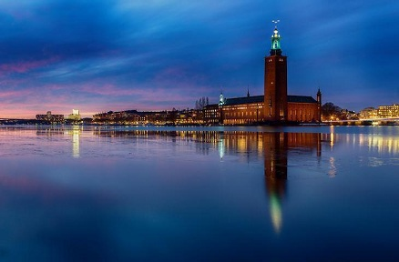
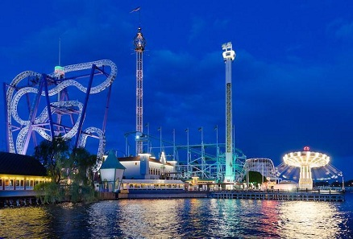
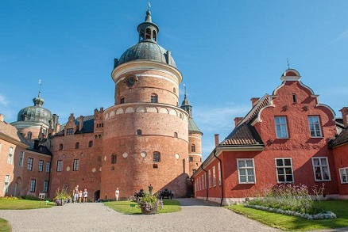
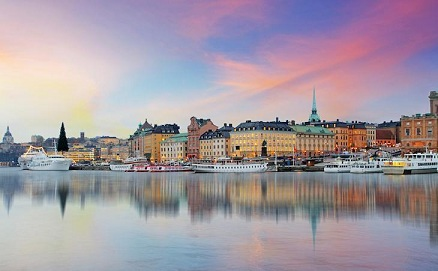

Saiba tudo sobre a Suécia
por Matheus Oliveira
PONTOS TURÍSTICOS DA SUÉCIA
Os costumes da Suécia são muito similares aos do restante da Europa. Como em muitos países da Escandinávia, existe a regra de tirar os sapatos ao entrar nas casas. Isto tem uma finalidade prática, mais que tradicional: como o clima muitas vezes é úmido e pode haver neve, é melhor evitar sujar a casa.Estocolmo é mundialmente conhecida por possuir um sistema de política impecável, e é considerada como uma das 5 melhores cidades do mundo para se viver. Mas a capital sueca tem muito mais que uma boa política e boas condições de vida, você poderá comprovar ao conhecer os principais pontos turísticos de Estocolmo, o que é uma bela oportunidade pra quem procura lindas paisagens, tranquilidade, boas doses de cultura e muita história.
Além de ser encantadora, Estocolmo é uma ótima opção para turismo. A capital oferece diversas atrações interessantes para todos os tipos de público. Você pode se divertir em locais fechados, curtir os parques da cidade ou encantar-se pelas águas suecas. Estocolmo está situada sobre 14 ilhas, por isso, ganhou até o apelido de “Veneza do Norte”.
A cidade também encanta os amantes de grandes edifícios e monumentos, todos muito bem preservados. Se você gosta de boa comida, também se encantará pela quantidade de cafés, bares e restaurantes que rodeiam a cidade. Confira agora 10 dos pontos turísticos imperdíveis da capital sueca.
Stadshuset- Câmara Municipal de Estocolmo
O edifício mais famoso de Estocolmo recebe seus turistas para visitas guiadas de 45 minutos, em horários marcados. As turmas são subdivididas por idioma, em sueco e em inglês, e durante o verão, algumas outras línguas também são disponibilizadas. Além de sediar a prefeitura da cidade, é por lá também que ocorre a cerimônia do Nobel da paz.
Gröna Lund
O parque de diversões mais antigo do país foi inaugurado em 1883, com algumas montanhas russas tradicionais e eventos específicos que acontecem durante o verão.
Castelo Gripsholm
O castelo de 65 cômodos fica em Södermalm, e hoje é um museu com um longo acervo, entre eles a Galeria Nacional de Retratos, uma das coleções mais antigas do mundo. Tire um tempinho para visitar o lugar com calma, porque além das exposições, há também um imenso jardim, ideal para fazer um piquenique debaixo das árvores.
Gamla Stan
Conhecida como a Cidade Velha de Estocolmo, o bairro é marcado por sua arquitetura gótica alemã, vista facilmente nos prédios construídos entre os becos medievais e ruas pavimentadas com pedras. É um local delicioso de se perder, pois você encontrará diversas referências à história da Suécia, de monumentos e estátuas espalhadas por cada cantinho do local, até as fachadas dos edifícios. Não deixe de conhecer o restaurante mais antigo do mundo, o “Den Gyldene Freden”, que nunca teve o seu interior modificado desde a sua inauguração, em 1722, e também os pontos turísticos destacados a seguir.
Museu do Vasa
Vasa foi um navio de guerra sueco que naufragou em sua primeira viagem, matando todos os seus tripulantes. O acidente foi ocasionado por uma projeção errada no momento de sua construção, e foi considerado uma das maiores vergonhas da Escandinávia. Mas o mais surpreendente de tudo é que depois de 333 anos, Vasa foi resgatado das profundezas do Mar Báltico em um estado de conservação admirável, devido ao baixo índice de salubridade das águas, e 98% de sua estrutura foi restaurada e exposta em um museu só dele. Prepare-se para se surpreender com toda a história contada por lá!